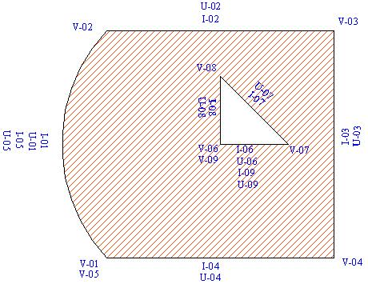

// ************************************************************************* // // Example of using InitPolygon2Ddata and ValidatePolygon2Ddata // in the Graphisoft Geometry Library // (c) Graphisoft 2003 // // *************************************************************************

// ************************************************************************* #include "BM.hpp" #include "Polygon2DData.h" // error checking is missing for simplicity void Example01 () { Geometry::Polygon2DData polygon; // Initializing a {(10.0,10.0); (20.0, 20.0)} rectangle (with an arc) long defaultVertexInfo = 0; long defaultInhEdgeInfo = 0; long defaultUniqEdgeInfo = 0; long defaultContourInfo = 0; long defaultUniqPolygonInfo = 0; Geometry::InitPolygon2DData (&polygon, sizeof (long), reinterpret_cast<GSPtr> (&defaultVertexInfo), // vertex informations sizeof (long), reinterpret_cast<GSPtr> (&defaultInhEdgeInfo), // edge informations sizeof (long), reinterpret_cast<GSPtr> (&defaultUniqEdgeInfo), // edge informations sizeof (long), reinterpret_cast<GSPtr> (&defaultContourInfo), // contour informations sizeof (long), sizeof (long), reinterpret_cast<GSPtr> (&defaultUniqPolygonInfo)); // polyogn informations // It has one contour and one hole polygon.nContours = 2; polygon.contourEnds = reinterpret_cast<UIndex**> (BMhAll (3 * sizeof (UIndex))); polygon.contourInfos = BMhAll (3 * sizeof (long)); (*polygon.contourEnds)[0] = 0; // not used, must be zero reinterpret_cast<long*>(*polygon.contourInfos)[0] = 'C-uu'; (*polygon.contourEnds)[1] = 5; // index of the last vertex in the first (main) contour reinterpret_cast<long*>(*polygon.contourInfos)[1] = 'C-01'; (*polygon.contourEnds)[2] = 9; // index of the last vertex in the second (first hole) contour reinterpret_cast<long*>(*polygon.contourInfos)[2] = 'C-02'; polygon.nVertices = 9; // first vertices of contours is duplicated in the last (but do not count the unused) polygon.vertices = reinterpret_cast<Coord**> (BMhAll (10 * sizeof (Coord))); polygon.vertexInfos = BMhAll (10 * sizeof (long)); polygon.inhEdgeInfos = BMhAll (10 * sizeof (long)); polygon.uniqEdgeInfos = BMhAll (10 * sizeof (long)); // deliberately reverse-oriented (*polygon.vertices)[0] = Geometry::SetCoord ( 0.0, 0.0); // not used, must be zero reinterpret_cast<long*>(*polygon.vertexInfos)[0] = 'V-uu'; reinterpret_cast<long*>(*polygon.inhEdgeInfos)[0] = 'I-uu'; reinterpret_cast<long*>(*polygon.uniqEdgeInfos)[0] = 'U-uu'; (*polygon.vertices)[1] = Geometry::SetCoord (10.0, 10.0); reinterpret_cast<long*>(*polygon.vertexInfos)[1] = 'V-01'; reinterpret_cast<long*>(*polygon.inhEdgeInfos)[1] = 'I-01'; reinterpret_cast<long*>(*polygon.uniqEdgeInfos)[1] = 'U-01'; (*polygon.vertices)[2] = Geometry::SetCoord (10.0, 20.0); reinterpret_cast<long*>(*polygon.vertexInfos)[2] = 'V-02'; reinterpret_cast<long*>(*polygon.inhEdgeInfos)[2] = 'I-02'; reinterpret_cast<long*>(*polygon.uniqEdgeInfos)[2] = 'U-02'; (*polygon.vertices)[3] = Geometry::SetCoord (20.0, 20.0); reinterpret_cast<long*>(*polygon.vertexInfos)[3] = 'V-03'; reinterpret_cast<long*>(*polygon.inhEdgeInfos)[3] = 'I-03'; reinterpret_cast<long*>(*polygon.uniqEdgeInfos)[3] = 'U-03'; (*polygon.vertices)[4] = Geometry::SetCoord (20.0, 10.0); reinterpret_cast<long*>(*polygon.vertexInfos)[4] = 'V-04'; reinterpret_cast<long*>(*polygon.inhEdgeInfos)[4] = 'I-04'; reinterpret_cast<long*>(*polygon.uniqEdgeInfos)[4] = 'U-04'; (*polygon.vertices)[5] = Geometry::SetCoord (10.0, 10.0); // same as first vertex of the main contour reinterpret_cast<long*>(*polygon.vertexInfos)[5] = 'V-05'; reinterpret_cast<long*>(*polygon.inhEdgeInfos)[5] = 'I-05'; reinterpret_cast<long*>(*polygon.uniqEdgeInfos)[5] = 'U-05'; (*polygon.vertices)[6] = Geometry::SetCoord (15.0, 15.0); // first vertex of the hole reinterpret_cast<long*>(*polygon.vertexInfos)[6] = 'V-06'; reinterpret_cast<long*>(*polygon.inhEdgeInfos)[6] = 'I-06'; reinterpret_cast<long*>(*polygon.uniqEdgeInfos)[6] = 'U-06'; (*polygon.vertices)[7] = Geometry::SetCoord (18.0, 15.0); reinterpret_cast<long*>(*polygon.vertexInfos)[7] = 'V-07'; reinterpret_cast<long*>(*polygon.inhEdgeInfos)[7] = 'I-07'; reinterpret_cast<long*>(*polygon.uniqEdgeInfos)[7] = 'U-07'; (*polygon.vertices)[8] = Geometry::SetCoord (15.0, 18.0); reinterpret_cast<long*>(*polygon.vertexInfos)[8] = 'V-08'; reinterpret_cast<long*>(*polygon.inhEdgeInfos)[8] = 'I-08'; reinterpret_cast<long*>(*polygon.uniqEdgeInfos)[8] = 'U-08'; (*polygon.vertices)[9] = Geometry::SetCoord (15.0, 15.0); // same as first vertex of the hole reinterpret_cast<long*>(*polygon.vertexInfos)[9] = 'V-09'; reinterpret_cast<long*>(*polygon.inhEdgeInfos)[9] = 'I-09'; reinterpret_cast<long*>(*polygon.uniqEdgeInfos)[9] = 'U-09'; // Adding an arc between the first and second vertices (first edge) polygon.nArcs = 1; polygon.arcs = reinterpret_cast<PolyArcRec**> (BMhAll (2 * sizeof (PolyArcRec))); (*polygon.arcs)[0].arcAngle = 0.0; // not used, must be zero (*polygon.arcs)[0].begIndex = 0; (*polygon.arcs)[0].endIndex = 0; (*polygon.arcs)[1].arcAngle = 0.4; // the viewangle in radian (*polygon.arcs)[1].begIndex = 1; (*polygon.arcs)[1].endIndex = 2; // must be next vertex Geometry::ValidatePolygon2DData (&polygon); // Check for safety Geometry::CheckPolygon2DDataIntegrity (polygon); // TODO: // Do some operations with the polygon // Clean-up Geometry::FreePolygon2DData (&polygon); }
Copyright © 2022 - GRAPHISOFT SE. All rights reserved worldwide.
Modified on May 29, 2022